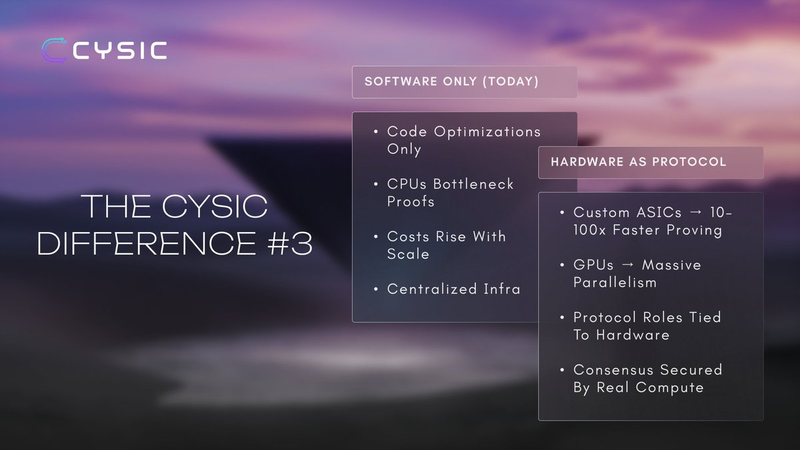

Selected X analyticsA record of consistent community attention
Audience
4.5K+
Impressions
1M
Engagements
104.1K
Engagement rate
10.1%
01
About
Community is not a follower count. It is what people understand, trust, and do next.
I work at the intersection of Web3 community, product education, and content.
My job is to take infrastructure that feels distant or technical and give people
a clear reason to care, participate, and stay.
That work can be a campaign strategy, an educational thread, an AI video,
a hands-on tutorial, a Discord system, or a small game that turns a passive
audience into an active community.
Current roleAmbassador & CyRunner, Cysic Network
BuildingSynapseMesh & Filament
Core practiceCommunity, content, AI video & advisory

Current role · Cysic Network
Making ComputeFi easier to understand and participate in.
As a Cysic Network ambassador and CyRunner, I translate hardware-accelerated
proving, decentralized compute, and ZK infrastructure into community-first
stories and activations.
Participated across all three Cysic testnet phases.
Earned creator leaderboard positions and recognized Discord roles.
Built interactive games for Cysic community participation.
Produced campus interviews, explainers, and AI-led campaign videos.
A selection of public work across Cysic, AI storytelling, BTCFi education,
and onchain product development.
01 / Cysic community activation
ComputeFi, outside the timeline.
I took Cysic beyond standard posts with a short campus interview about
ComputeFi, then paired education with interactive community games such as
Cysic Tiles and a memory-flip challenge.
Turning ZK infrastructure into clear community language.
My Cysic explainers connect the technical story to the user story: why
hardware matters for proving, what the testnet demonstrated, and how
ComputeFi changes access to AI, ZK, and mining workloads.
Privacy explained through people, not protocol diagrams.
I created a serialized AI-video campaign that framed blockchain privacy
through everyday stakes: a finance worker, artist, doctor, journalist,
teacher, gamer, and creator. The format made an abstract infrastructure
problem personal and easy to follow.
For SatLayer, I produced practical BTCFi explainers and step-by-step
tutorials covering xBTC restaking through Sui and the full LBTC journey
from bridging to restaking.
I built and demonstrated Filament with CyOps: an MCP project designed to
analyze onchain behavior and identify probabilistic links between wallets
across multiple EVM chains.